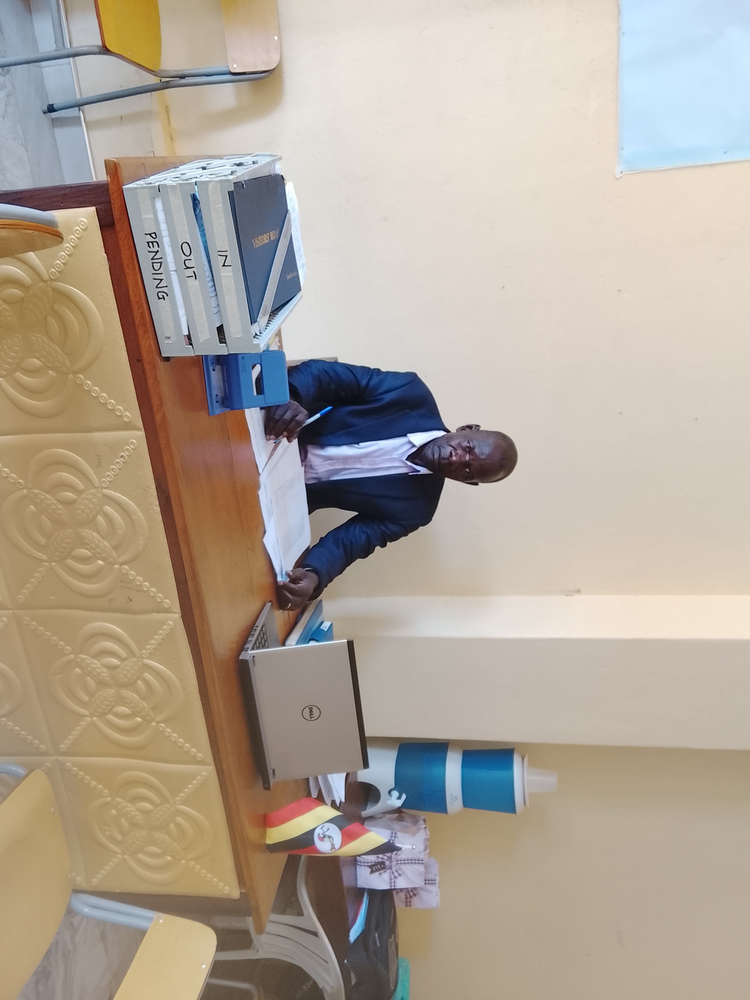

|
|
| HOME | ACADEMICS | PROJECTS | SPORTS | ONLINE FORM | CONTACT US |
ACADEMIC AT P.P NEWTON HIGH SCHOOL, UNYAMA - GULU
| SCHOOL | SUBJECTS |
 |
| LOWER SECONDARY LEVEL | ADVANCED SECONDARY LEVEL | |
|
English, Biology, Chemistry, ICT, Agriculture, Entrepreneurship,
literature, Mathematics, Physics, Mathematics, Geography, CRE, IPS,
Physical Education, Kiswahili, Leb Acoli |
BCM, PCM, MEG, HED, HEG, DEG, GEA, HLD, BAC, GENERAL PAPER, is
compulsory, and according to subject combination you either take Sub-mathematics or Sub-ICT. |